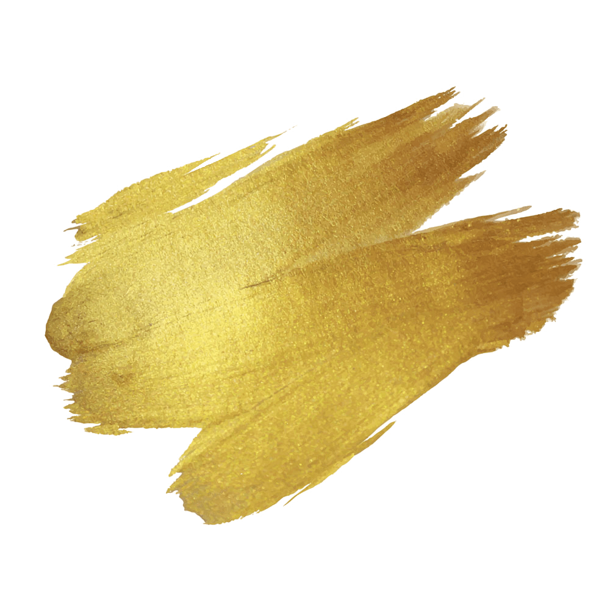
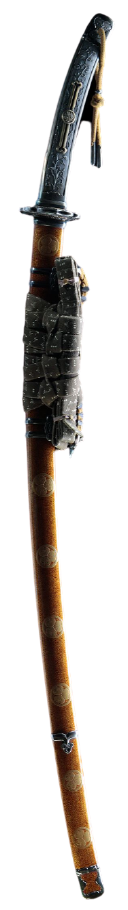
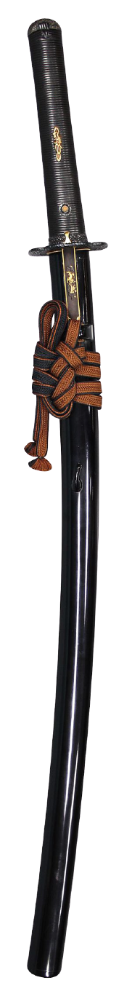
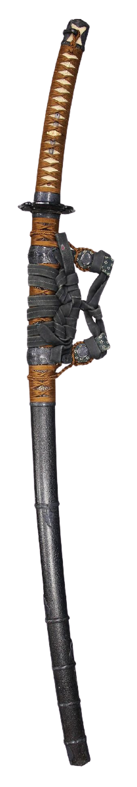
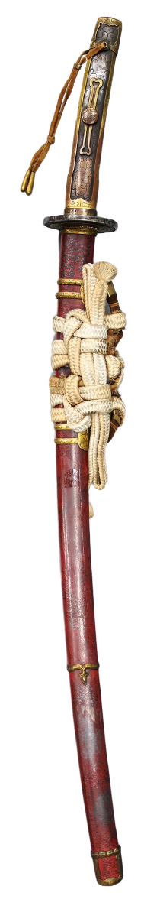
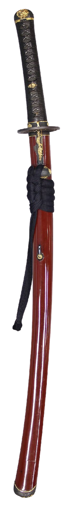
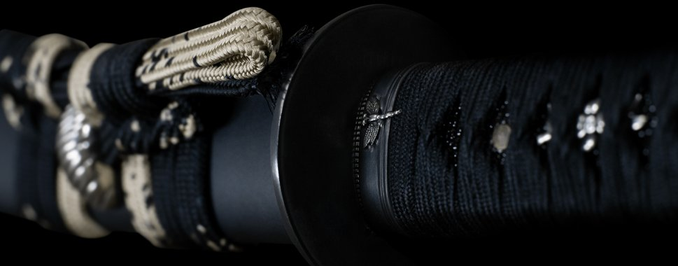

All swords from Thaitsuki are handmade by sword craftsmen and artisans who have served years of
apprenticeship under the master. Each order is hand crafted using traditional Japanese methods of sword
production.

MASTERPIECES





KKKK
MORE INFO

CONTACT
A katana (刀 or かたな) is a Japanese sword characterized by a curved,
single-edged blade with a circular or squared guard and long grip to accommodate two hands.
It was used by the samurai of ancient and feudal Japan.